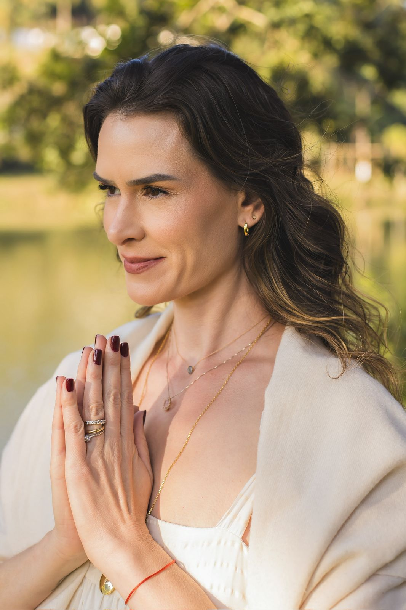

Liderança Mental · Presença · Performance Sustentável
Sou Juliana Carvalhaes, empresária, mentora e especialista em liderança mental. Ajudo líderes, empresários e grandes mentes a desenvolverem clareza, presença, segurança emocional e performance sustentável.
Sobre
Antes de ensinar pessoas a liderarem suas próprias mentes, eu precisei aprender a liderar a minha.
Vivi anos de movimento intenso, pressão, adaptação e reconstrução. A meditação entrou na minha vida não como profissão, mas como recurso de sobrevivência, clareza e cura.
Aos poucos, aquilo que começou como uma busca pessoal se transformou em método, missão e empresa.
Hoje, são mais de 22 anos dedicados ao autoconhecimento, desenvolvimento humano e práticas contemplativas, com milhares de pessoas impactadas por mentorias, retiros, palestras, cursos e experiências presenciais.
Juliana Carvalhaes
Tese Central
Muitas pessoas tentam mudar a rotina, o negócio, o corpo, os relacionamentos e a performance sem mudar a mente que conduz tudo isso.
Por isso, liderança mental não é luxo. É competência essencial para quem precisa tomar decisões importantes, sustentar alta performance e viver com mais presença.
A mente lidera emoções
Emoções influenciam ações
Ações constroem resultados
O Método
Organizo o desenvolvimento da liderança mental em três ciclos progressivos.
01
Desacelerar, silenciar ruídos, perceber padrões e entender o momento real. Inclui diagnóstico, escuta profunda, alinhamento interno e início da prática meditativa.
02
Identificar crenças, padrões emocionais e estruturas internas que limitam clareza, presença e decisão. Ferramentas de mindfulness, neurociência, reprogramação mental e práticas de autorregulação.
03
Transformar percepção em ação. Sustentar clareza, foco, presença, tomada de decisão, regulação emocional e performance mental no dia a dia. Não é apenas entender. É treinar.
Resultados

Mais clareza mental
Decisão com confiança
Organização interna
Presença e foco
Gestão da ansiedade
Regulação emocional
Transformação de padrões
Performance sustentável
Mais consciência sobre rotina, tempo e energia
Para Quem É
Este trabalho é para líderes, empresários, profissionais de alta responsabilidade e pessoas em fase de expansão que desejam crescer sem se perder de si.
Programas
01
Um processo personalizado para reorganizar sua mente, elevar seu nível de consciência e desenvolver uma nova forma de decidir, agir e sustentar resultados. Você passa pelos três ciclos do método: consciência, autoconhecimento e competência.
02
Depois que a mente foi reorganizada, ela precisa continuar sendo treinada. Acompanhamento contínuo para ex-alunos que desejam manter a prática, fortalecer presença, sustentar decisões e não perder a conexão com o próprio centro. Assim como o corpo, a mente também precisa de treino constante.
03
Duas experiências diferentes, complementares, com o mesmo objetivo: ajudar você a voltar para si com mais clareza. O 360° é uma experiência profunda de transformação, expansão e cura de padrões. O Presença é uma experiência de descanso profundo, silêncio e práticas sensoriais.
04
Levo liderança mental, presença e performance sustentável para empresas, eventos e grupos de líderes. Os temas podem ser adaptados para saúde mental, alta performance, tomada de decisão, presença, foco, gestão emocional e cultura de bem-estar. Empresas não são feitas apenas de processos. São conduzidas por mentes.
Quem Pratica
"
Eu tinha resultado, mas vivia sob pressão constante. A Meditação Total me trouxe clareza mental e estabilidade emocional para tomar decisões com mais segurança. Hoje lidero com presença e energia sustentável, sem perder performance.
Alexandra C.
Empresária · Alta Performance
"
Aprendi a organizar minha mente antes de organizar minha agenda. Passei a reagir menos e decidir melhor. Minha liderança ficou mais consistente e meus resultados mais estáveis.
Rafael T.
Diretor Executivo
"
Minha preparação física sempre foi forte. O diferencial veio quando organizei minha mente. Hoje performo sob pressão com foco e controle emocional.
Bruno C.
Atleta Profissional
Começar
A liderança começa dentro.